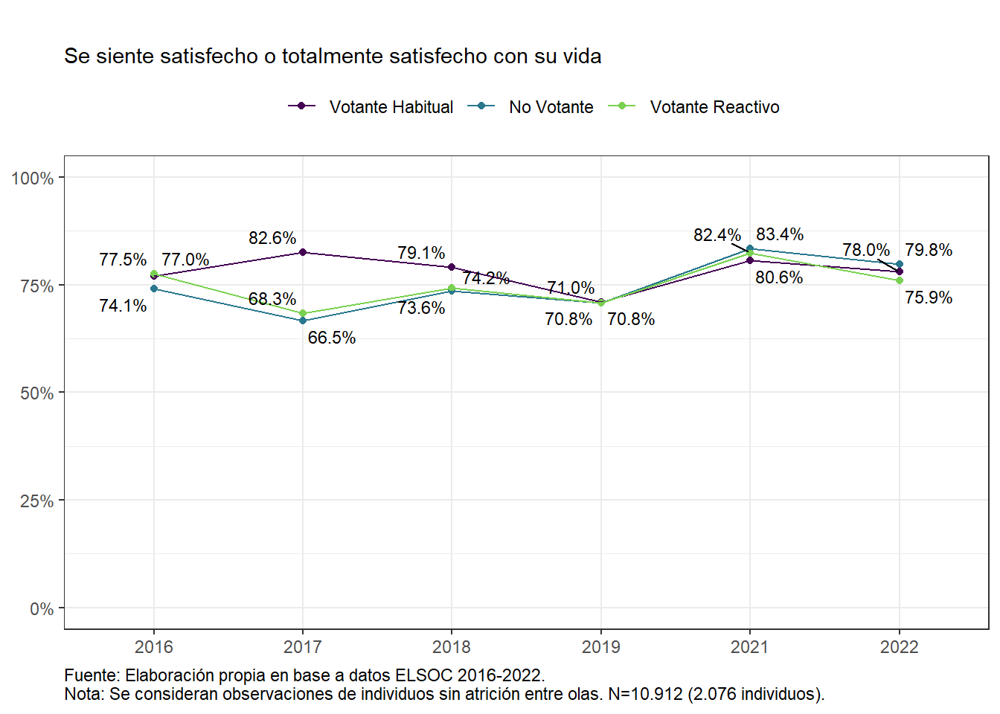

Capítulo 3 Cohesión social
La cohesión social expresa una aspiración normativa relativa a una sociedad cuyos integrantes comparten lazos sociales de calidad, sentido de pertenencia, así como confianza interpersonal y en las instituciones. Desde el punto de vista estructural, la cohesión social comprende las condiciones estructurales y políticas que apunten a equidad, integración y oportunidades (Castillo et al., 2022). La cohesión social constituye, por lo tanto, un fenómeno multidimensional que comprende diversos aspectos de la vida en sociedad. En esta sección se presentan indicadores que no agotan su complejidad; una discusión y medición de la cohesión social utilizando datos ELSOC se encuentra en Castillo et al. (2022). Dado el carácter individualizado de los datos, no se presentan medidas estructurales de cohesión social.
3.2 Sentido de pertenencia
El orgullo de ser chileno o chilena puede entenderse como una indicación del grado de cohesión de la comunidad en torno a los símbolos nacionales (Dalton, 1999). Las personas en general buscan tener una imagen positiva de sí mismas y de los grupos a los que pertenecen. Esta idea corresponde a uno de los principales supuestos de la Teoría de la Identidad Social (Tajfel et al., 1986). De esta manera, se asume que el sentido de pertenencia a una nación puede contribuir a esta función psicológica. En consecuencia, se puede suponer que, si las personas se identifican como miembros de una nación, intentarán evaluar positivamente a la nación a la que pertenecen. El patriotismo se entiende como un aspecto esencialmente valioso, porque representa sentimientos de apego al propio país (Blank & Schmidt, 1997).
Tal como lo revela la Gráfico 3.3, se constatan altos niveles de orgullo nacional en todos los grupos de votantes, exhibiéndose muy pocas variaciones a lo largo del tiempo. Es decir, el nivel de orgullo nacional se mantiene estable y alto a lo largo de los años. Sin embargo, el orgullo nacional de los chilenos muestra algunas variaciones importantes en 2022 según grupo de votantes, donde los valores fluctúan entre 84% y 94%, siendo el grupo de los no votantes quienes en términos relativos exhibe menos niveles de orgullo nacional en comparación a los votantes habituales y votantes reactivos.
Figura 3.3: Orgullo de ser chileno según perfil de votante
La justicia social se refiere a la valoración que hacen las y los entrevistadas/os respecto de los principios que organizan el acceso y distribución al bienestar en la sociedad chilena, en particular la igualdad de oportunidades, vale decir, el principio de que la posición social depende principalmente de los méritos individuales (Dubet, 2011). El indicador Percepción de justicia fue construido de acuerdo con las afirmaciones “Las personas son recompensadas por sus esfuerzos” y “Las personas son recompensadas por su inteligencia”; mayor grado de aceptación con estas afirmaciones indica una mayor percepción de justicia en la distribución de recompensas.
En general, el Gráfico 3.4 muestra una convergencia hacia niveles relativamente bajos de percepción de justicia (que no superan el 50% a lo largo de los años) en los tres tipos de votantes, los cuales, sin embargo, siguen distintas trayectorias. Los votantes habituales presentan una pauta relativamente estable a lo largo de los años, y exhiben menor grado percepción de justicia en 2021. Los no votantes muestran un incremento gradual en la percepción de justicia social entre el 2016 y 2018, pero esta cae a partir de 2019, año en que ocurre el estallido social. Luego se mantiene estable en los años posteriores. Los votantes reactivos, por su parte, muestran variaciones importantes en distintos años. Por ejemplo, son quienes exhiben los mayores niveles de percepción de justicia el 2016; sin embargo, esta cae drásticamente el 2017 y luego sigue una trayectoria de recuperación gradual, acercándose a los valores que exhiben los otros grupos de votantes.
Figura 3.4: Percepción de justicia según perfil de votante
3.3 Vínculos Territoriales
Un aspecto relevante de la cohesión social se relaciona con la dimensión territorial y barrial (Méndez et al., 2021). Chile es un país marcado por altos niveles de segregación espacial (Link et al., 2015; Agostini et al., 2016; Garretón, 2020), los cuales acarrean consigo importantes diferencias y desigualdades socioeconómicas entre diferentes zonas del país y también dentro de las distintas ciudades y territorios.
El término territorio posee múltiples acepciones, que van desde lo administrativo (por ejemplo, “territorio nacional”) hasta lo geográfico (como en “territorio montañoso”) pasando por las acepciones culturales (como “territorios ancestrales”), sin dejar de lado sus usos metafóricos (por ejemplo, “territorio existencial”). En los estudios urbanos el término “territorio” desplazó el concepto de “espacio”, habitualmente entendido como la construcción social de un territorio (Lefebvre, 2020). En este informe, el territorio se encuentra acotado a los procesos sociales de los residentes urbanos, vale decir, la forma en que el contexto geográfico de las ciudades ofrecen oportunidades y limitaciones a sus habitantes.
Los estudios urbanos sobre Chile han destacado especialmente el carácter segregado de las ciudades, especialmente en términos socioeconómicos (Garretón et al., 2020; Méndez et al., 2021). La segregación de los territorios es un factor que va contra la cohesión social en los barrios, vale decir, la calidad de la convivencia en el contexto urbano, referida a sentimientos de apego, compromiso mutuo, y la confianza que emergen de ciertos valores y normas legitimadas en las comunidades (Berger-Schmitt, 2002; Schiefer & van der Noll, 2017). En el contexto barrial, la cohesión comprende aspectos vinculados a las formas de interacción social, participación local y prácticas asociativas (Forrest & Kearns, 2001).
La creación de espacios urbanos segregados tienen un componente macrosocial vinculado al modelo de desarrollo urbano, donde la rentabilidad de las inversiones privadas se ve favorecida por la producción de conjuntos de costo similar, lo que deriva en homogeneidad socioeconómica de sus residentes. La segregación territorial reduce la interacción entre grupos sociales diversos. Dependiendo del nivel socioeconómico la segregación territorial puede actuar como la clausura de los barrios más favorecidos, en el caso de los residentes de mayores ingresos o bien, en contraste como exclusión en el caso de los residentes de menores recursos.
La segregación residencial de los sectores de menor ingreso es una forma de aislamiento social que vincula personas de similar condición y reduce la probabilidad de formar vínculos con personas de otros círculos sociales. De acuerdo con Wilson y Wacquant (1989) el aislamiento social en los barrios pobres se expresa en la ausencia de vínculos con clases medias y obreras, así como la ausencia de instituciones asociadas con estos grupos (servicios públicos, supermercados, bancos, etc). El aislamiento social y geográfico de los barrios más pobres reduce las oportunidades de acceso a recursos, enfrentando habitualmente una estigmatización asociada con la criminalidad (Alvarez & Ruiz-Tagle, 2022). El aislamiento social de los barrios debilita su tejido social y reduce el control social sobre el entorno, lo cual profundiza su desvalorización y reduce la posibilidad de contrarrestar las economías criminales.
Por cierto, no resulta apropiado imputar desintegración y degradación de la convivencia social a todos los barrios pobres. Un aspecto clave es que la mayor densidad social a través de organizaciones formales o relaciones sociales informales reduce la conflictividad, otorgando poder a los vecinos para incidir en las políticas de desarrollo urbano y controlar su entorno. Los datos ELSOC que se presentan a continuación muestran la necesidad de precisar los grados de vulnerabilidad y cohesión en los diversos barrios. Los datos muestran en general satisfacción con el barrio y buena convivencia con los vecinos, junto con el incremento en la percepción de inseguridad. Futuros estudios deberán mostrar en qué medida estos fenómenos se encuentran acotados o extendidos en los territorios.
ELSOC midió el grado en que sus participantes muestran apego al barrio en que viven y la forma en que establecen sus relaciones vecinales, pudiendo exhibir problemas o derechamente conflictos con sus vecinos. Adicionalmente, se midió la percepción de inseguridad y criminalidad en los barrios.
El Gráfico 3.5 revela un alto grado de vinculación o apego territorial en todos los grupos de votantes. El nivel de apego al barrio es relativamente estable a lo largo de los años; sin embargo, se constatan fluctuaciones en las trayectorias de los grupos de votantes, dentro de un nivel de apego alto. Los votantes habituales mantienen una vinculación territorial alta y estable en todas las mediciones. En cambio, los no votantes experimentan una caída entre el 2016 y el 2018, luego una recuperación cercana al 80% para volver a caer a 71 % en 2022. Por su parte, los votantes reactivos exhiben un perfil opuesto a los no votantes e incrementan su vinculación con el barrio, pasando desde un 71% en 2018 a 83% en el 2019, cayendo luego a un 76,6% en 2022.
Figura 3.5: Vinculación territorial según perfil de votante
La conflictividad barrial es un indicador de la calidad de los vínculos que las personas establecen con sus vecinos. El índice de conflictividad barrial que se presenta a continuación fue construido a partir del grado de acuerdo con las afirmaciones referidas a problemas con vecinos por ruidos, tenencia irresponsable de mascotas, basura, amenazas, insultos u ofensas.
Tal como muestra el Gráfico 3.6, en general los niveles de conflictividad barrial percibida son bajos y no experimentan fluctuaciones notorias según los perfiles de votantes, excepto en el caso de los no votantes. Por una parte, los votantes habituales y los reactivos, muestran una pauta muy similar de conflictividad barrial percibida, siendo baja y estable a lo largo del tiempo. En cambio, los no votantes experimentan fluctuaciones importantes a lo largo del tiempo, exhibiendo aumentos importantes el 2017 y 2019 respectivamente, llegando a un 8,6% y 8% de conflictividad barrial percibida.
Figura 3.6: Conflictividad barrial alta según perfil de votante
El Gráfico 3.7 muestra fluctuaciones, a lo largo del tiempo, en los niveles de percepción de criminalidad barrial y según tipo de votante.
En primer lugar, se constata un incremento sustantivo en la percepción de criminalidad barrial entre 2019 y 2022, referido a robos o asaltos en el barrio en todos los grupos de votantes, excepto en los votantes reactivos. Los no votantes que responden que “muchas veces” o “siempre” se producen estos hechos de esta naturaleza, pasaron de 15,4% en 2019 a 25,0% en 2022; de forma similar, los votantes habituales pasaron de 13,1% a 19,4%. Sin embargo, el aumento es más marcado en el perfil de no votantes. Los votantes reactivos siguen una pauta distinta, siendo el único grupo que exhibe una caída gradual de percepción de criminalidad barrial desde un 22,6% en 2017 a un 14% en 2022.
Figura 3.7: Criminalidad barrial alta según perfil de votante

El marcado incremento en la percepción de criminalidad barrial no tiene un correlato en la percepción de inseguridad barrial. El Gráfico 3.8 muestra una percepción de inseguridad barrial relativamente estable a lo largo del tiempo. Las variaciones más marcadas se encuentran entre 2018 y 2021, especialmente para los votantes reactivos, que aumentaron su percepción de inseguridad barrial en 2019, mientras que disminuyó entre los votantes habituales ese mismo año. Por su parte, los no votantes incrementaron sus niveles de percepción de inseguridad barrial a partir del estallido social, manteniéndose en torno a un 27%. Interesantemente, el grupo de no votantes es el único grupo que sistemáticamente exhibe un porcentaje relativamente más alto de percepción de inseguridad barrial en comparación a los otros grupos de votantes durante todos los años, diferenciándose sustantivamente de los votantes habituales y reactivos a partir del 2021 en adelante.
Figura 3.8: Percepción de inseguridad barrial según perfil de votante
3.4 Bienestar
La cohesión social depende en gran medida de los niveles de bienestar que logren las personas, lo cual redunda en los niveles de satisfacción con la vida. ELSOC abordó esta temática así como los niveles de sobrecarga que producen las deudas y la expectativa de movilidad intergeneracional ascendente como aspectos claves del bienestar que tienen las personas.
El Gráfico 3.9 muestra el porcentaje de personas satisfechas y muy satisfechas con su vida, para los distintos tipos de votantes entre el 2016 y el 2022. En general, los niveles de satisfacción con la vida de todos los votantes son altos, con pocas fluctuaciones a lo largo de los años. Al comienzo del estudio se observa que los tres tipos de votantes tienen un grado de satisfacción con la vida alto y muy similar entre sí (entre un 74% y un 77%); sin embargo, este comienza a diferir a partir del año 2017, donde los votantes habituales aumentan sus niveles de satisfacción, mientras que los otros dos tipos lo disminuyen. En 2019 los tres tipos de votantes vuelven a mostrar niveles de satisfacción casi idénticos, y sus trayectorias se mueven de forma muy parecida en los siguientes años. Gráfico 3.9: Satisfacción con la vida, según perfil de votante.
Figura 3.9: Satisfacción con la vida según perfil de votante
Distintos estudios nacionales han reportado que los hogares chilenos se caracterizan por altos niveles de endeudamiento (Perez-Roa, 2020). Estudios previos han encontrado un efecto negativo del endeudamiento en la salud de las personas asociado a mayores niveles de ansiedad, síntomas depresivos, estrés y estigmatización social (Hojman et al., 2016; Sweet et al., 2013). Dado esto, Elsoc analizó nuevamente el nivel de endeudamiento que reportan las personas a lo largo de los años como otro indicador de bienestar.
El Gráfico 3.10 muestra el porcentaje de personas bastante o muy sobrecargadas por deudas entre los años 2016 y 2021. Los resultados revelan algunas fluctuaciones a lo largo del tiempo y según tipo de votante que son interesantes de analizar. En primer lugar, los votantes reactivos presentan una tendencia estable a lo largo de los años y se observa que entre un 20% y 22% de ellos presenta una alta sobrecarga de deudas. Los votantes habituales y no votantes, por su parte, declaran una notoria disminución de su alta sobrecarga de deudas entre 2018 y 2021, pasando respectivamente de 25,4% a 16,9% y de 22, 6% a 11,6%.
La disminución en el porcentaje de personas que declaran sobrecarga de deudas en 2021 ocurre en un contexto de incremento en la disponibilidad de dinero en las personas a raíz del Ingreso Familiar de Emergencia Universal (IFE) y los retiros de fondos desde las AFP (Barozet et al., 2021). El ingreso disponible bruto de los hogares nacionales aumentó un 20% respecto a 2020 y la deuda de los hogares bajó al 47,1% del PIB, dada una contracción de 3.8 puntos al comparar con el 2020 (Toledo, 2022).
Figura 3.10: Sobrecarga por deudas según perfil de votante
El Gráfico 3.11 indica la trayectoria del porcentaje de personas que creen que sus hijos tendrán un mejor estatus social que ellos. Las expectativas de movilidad ascendente para los hijos tienen su nivel más alto para todos los grupos de votantes en 2016 en rangos que varían entre 72% a 84%, apreciándose una disminución gradual hacia 2018, donde se ubica en rangos que varían entre 60 a 69%. Las expectativas se estabilizan en las mediciones posteriores y en 2022 se encuentran en rangos de 60% a 71%. Las variaciones más marcadas a la baja se aprecian entre los no votantes. Este grupo es de hecho el que experimenta la mayor caída a lo largo de los años en comparación a los otros grupos de votantes (de un 72,5% en 2016 a un 59,7% en 2022).
Hasta el año 2019, inclusive, los perfiles de votantes reactivos y no votantes presentaban tendencias paralelas en la perspectiva de movilidad, tendencia que fue descendiente hasta el año 2018 y luego creció levemente el 2019, para después mantenerse en torno al 70% para los años 2021 y 2022. Para el caso de los votantes habituales, la tendencia fue estable a lo largo de los años y la única caída alta en magnitud fue el año 2018, cuando cayó en seis puntos porcentuales el porcentaje de personas que esperaban un mayor estatus social por parte de sus hijos, pero luego siguió manteniéndose en torno al 70%.
En promedio, se vio una baja desde el año 2016 hasta el año 2022 en la perspectiva de movilidad ascendente, indicando que las personas tienen menos expectativas de que sus hijos superen el estatus social que ellos presentan como sus padres. Lo anterior se puede deber a dos hipótesis: Los padres no creen que sus hijos tendrán más oportunidades, porque creen que en general en el país no habrá más oportunidades de movilidad social; o los padres se muestran menos optimistas que antes en general. La segunda hipótesis se muestra menos viable, considerando el Gráfico 3.9 que indica una mayor satisfacción con la vida que antes y esta puede ser utilizada como una medida relacionada con el optimismo.
Figura 3.11: Perspectiva de movilidad social ascendente según perfil de votante